I founded Colorado's first Formula SAE Electric Vehicle program and designed a 324V, 8.64kWh battery system that earned a Tesla sponsorship. Across four competition vehicles, I've designed custom PCBs (BMS, safety interlocks, telemetry), written CAN test frameworks for fault validation, and architected full vehicle harnesses integrating 30+ sensors.
I scaled RAM Racing from 30 to 60+ members, raised $400K, and shipped four competition vehicles, building a team culture around precision, ownership, and real engineering accountability.
4Competition vehicles engineered
60+Members led at RAM Racing
$400KFunding raised
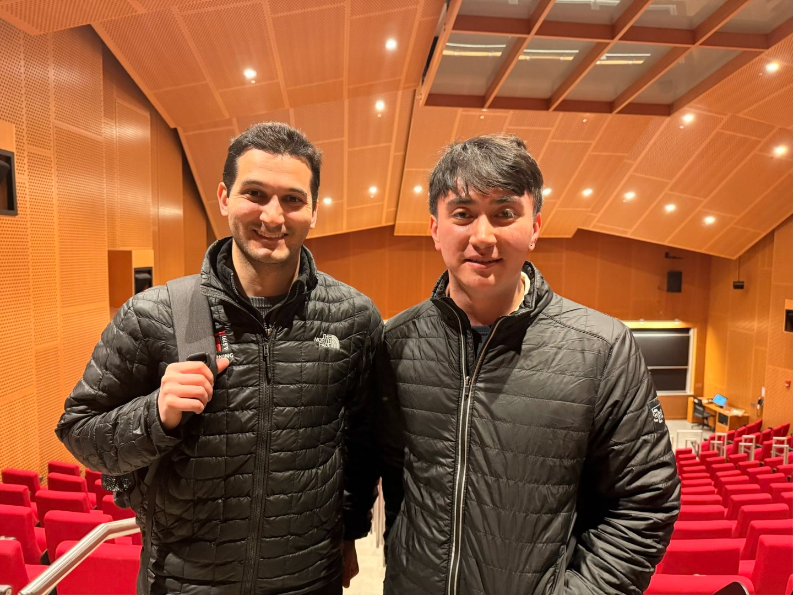
Image of meat MIT with Alexander Amini
At MIT with Alexander Amini after being selected for the Deep Learning class.
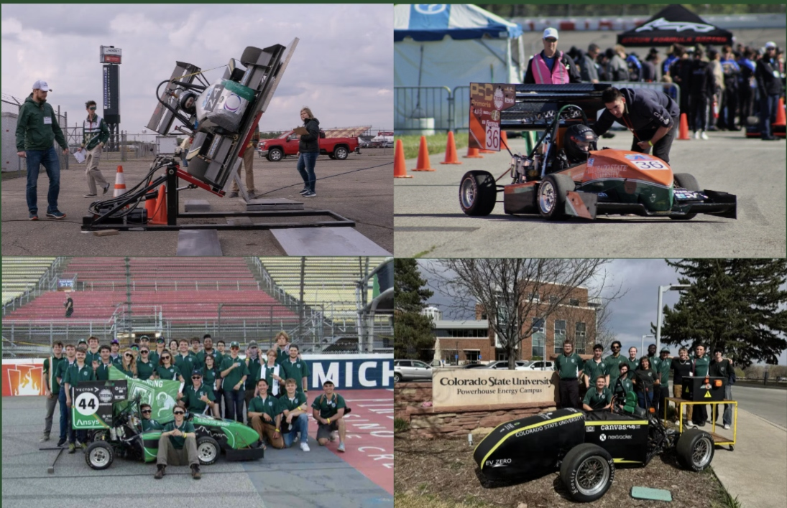
Image of the carsRAM Racing fleet
Formula SAE vehicles built at RAM Racing, four completed, six total by graduation.
Projects
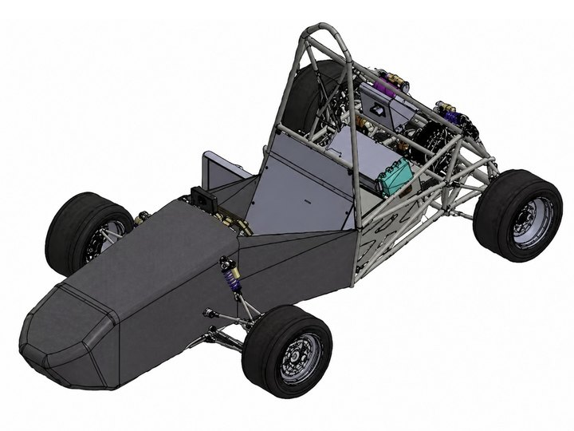
01Venus EVColorado's flagship FSAE Electric car, full HV accumulator & safety stackHV Accumulator324V BatteryBMSKiCadSystem IntegrationElectrical System OfficerFSAE 2026+
As Electrical System Officer for the 2026 car, I managed the LV and HV subteams while personally focusing on energy experimentation to deliver the program's first competition-bound battery pack, balancing the technical demands against the challenge of building it as cheaply as possible so the other subteams had the budget to build the rest of the car.
Battery Pack Architecture & Cell Selection
90s5p · 8.64kWh · 324V nominal, designed cell-level from scratch
Background
First EV program with no existing battery architecture, required full cell-level design rather than purchasing pre-made modules.
Budget constraints made in-house cell assembly necessary, saving ~$7,000 but requiring the electrical team to own all pack design decisions.
Needed to size for FSAE endurance (22km) with enough margin to account for simulation uncertainty.
Technical Approach
Evaluated five cell chemistries (P30B, P50B, P28A, P60B, M35A); selected Molicel P50B for its energy density (5000mAh, 18Wh) at acceptable weight (71g) and internal resistance (17mΩ).
Simulated full endurance in OpenLap (2023 Michigan layout), 350Wh/lap, requiring 7.7kWh minimum; applied a 12% margin from a prior ICE vehicle where actual exceeded simulation by 7%.
Configured as 90s5p (8.64kWh, 324V nominal) in 16 segments of three modules each, enabling symmetric segment removal for future weight optimization.
Results
Delivered complete pack architecture meeting FSAE energy requirements with 12% validated margin.
Cell thermal modeling confirmed sub-40°C operation through full endurance, eliminating active cooling complexity.
Modular design enabled future weight reduction without redesign, ordered 20% extra cells for screening and parallel-group matching.
Battery Pack High-Voltage Integration
Precharge, discharge & isolation monitoring, full KiCad HV architecture
Background
HV system must precharge inverter bus capacitance before contactor closure, discharge stored energy on shutdown, and continuously monitor isolation failure, any fault is safety-critical.
FSAE rules require precharge to 95% bus voltage before main contactor closure, discharge to under 60V within a set time, and IMD response within defined latency for isolation loss.
Technical Approach
Sized 1/0 AWG EXRAD-HVX1V8X cabling from thermal modeling (sub-40°C continuous, margin to 90°C at 500A) and selected Littelfuse protection from datasheet I²t curves.
Designed precharge (620Ω, 0.88mF bus, 95% in under 10s) and discharge (2.2kΩ, NC relay auto bleed-down) circuits within resistor power ratings.
Created a full KiCad schematic defining AIR control, IMD integration, TSAL logic, energy metering, and connector interfaces (Amphenol, LEMO, Hirose).
Results
Delivered complete HV architecture with selections justified by operating conditions and datasheet specs.
Produced operational documentation covering startup, shutdown, and fault injection sequences.
System prepared for bench validation of precharge timing and IMD fault response before integration.
450-cell pack (90s5p, Molicel P50B 21700) requires structural containment against shock and vibration, cell ejection or busbar fatigue causes short circuit or arc flash.
No inherited designs; team defined module geometry, materials, and assembly sequence from scratch with in-house FDM and manual welding.
Architecture must allow field serviceability while meeting FSAE flame-retardant and HV isolation requirements.
Technical Approach
Drove material selection through weighted matrices: steel exterior (59/100), garolite interior (46/100), passive air cooling (41/100).
Defined a module-segment-pack hierarchy (2s5p → 6s5p → 90s5p) with press-fit cell retention and keyed copper busbars preventing incorrect assembly.
Supported the mechanical engineer with stress analysis inputs; evaluated printable materials (Ultem 9085, Nylon-GF, PC-FR, ASA, PEEK) against UL94 and Tg.
Results
Delivered complete pack architecture with material down-selections justified by quantified tradeoff analysis.
Defined poka-yoke busbar geometry eliminating operator errors across 90 module interfaces.
Established module specs (35.3 cm³, 46g, 45-min print) enabling production planning for a 56-module build.
328A short-circuit characterization, benchtop test rig at 200Hz+
Background
Individual cell fusing must interrupt 328A theoretical short-circuit current to prevent thermal runaway, FSAE requires test data at four current levels (Level 4: 0.05 to 0.15s at highest current).
Nickel-plated fuse links with reduced cross-section need characterization to validate melt time against the thermal model (t_melt = M·ΔH / (P_gen - P_loss)).
Technical Approach
Built a benchtop rig using a stick welder (500A short-circuit) with a current sensor feeding Simulink for real-time acquisition and automatic blow-time detection.
Defined a test matrix across four current levels; a rapid fuse-swap fixture enables iterating geometry to correlate measured blow times with analytical calculations.
Results
Established a repeatable characterization process with >200Hz sample rate capturing blow transients.
Test data package prepared for SAE technical inspection, proving the fuse clears fault current within required windows.
Custom Charging Architecture
6.6kW off-vehicle charger interface with full interlock integration
Background
FSAE rules require accumulator removal for charging; the system must safely interface an external 6.6kW charger with HV isolation, interlocks, and voltage monitoring via banana jacks.
Technical Approach
Created a KiCad schematic defining the charger-to-pack interface: EV200A1ANA contactor, Amphenol UPCR012AL51 and TE AMP+HVP800 (50mm²) quick-disconnects, LV25-P voltage transducer with resistor divider for isolated HV sense, and HVIL continuity through a LEMO connector to shutdown.
Results
Delivered complete charging documentation with connector selections, fuse ratings (30A charger input, 5A energy meter), and wire gauges (8 AWG feed, 84mm² bus bars) enabling off-vehicle charging with full interlock integration.
Custom Battery Management System (in validation)
Distributed 16-slave architecture, 90-wire harness reduced to a 6-wire digital backbone
Background
Orion thermistor expansion required a 90-wire harness inside a 378V accumulator, creating assembly risk and service complexity.
Wiring bulk and connector density were the highest-probability failure modes during integration and maintenance.
Technical Approach
Designed a distributed architecture with 16 slave boards, 1 master, 16-bit ADCs over SPI, isolated GLV-to-tractive domains, and CAN communication to the BMS.
Replaced parallel analog wiring with a 6-wire digital backbone, local temperature acquisition with centralized data aggregation.
Results
Currently in the process of validation.
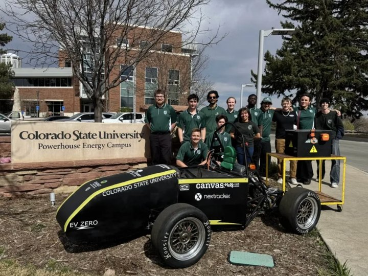
02Rubicon EVFirst CSU EV car, full vehicle electrical architecture & safety systemsSystem ArchitectureTractive SystemBrake PlausibilityPowertrainVehicle IntegrationChief EngineerFSAE 2025 EV+
As Chief Engineer of CSU's first electric car, I owned the full vehicle architecture and supported the powertrain and suspension teams, managing timelines across six mechanical and electrical subteams to deliver the first FSAE EV prototype in the Rocky Mountain region.
Formula SAE Electric Vehicle System Architecture
Full HV, LV & safety architecture, bench-testable before integration
Context
Integrated HV powertrain and LV controls into one vehicle-level design meeting FSAE shutdown and safety requirements.
Coordinated interfaces across inverter PM100DX, Orion VMS2, accumulator, and vehicle controls with mixed signal types.
Needed a bench-testable architecture to validate interlocks and communication before accumulator integration.
Technical Approach
Engineered full HV, LV, and safety system architecture and interfaces.
Defined shutdown, interlock, and communication paths (CAN, analog, digital).
Created complete KiCad schematics from component datasheets.
Results
Delivered complete electrical schematics used by all subteams.
Enabled bench testing of HV, LV, and safety interactions before vehicle integration.
Reduced integration risk during first high-voltage power-up.
FSAE rules require visible HV indication: solid red above 60V DC (live), blinking green below 60V (safe), incorrect indication is immediate disqualification.
Approach
Split the PCB into galvanically isolated HV and LV sections with a 0.3mm creepage barrier, isolated DC-DC converter, and optocoupler relay; HV side uses a resistor divider for comparator threshold detection, LV side drives a 555 timer for the green blink and red enable logic.
Results
Delivered KiCad schematic and PCB layout with clear HV/LV boundary marking, comparator-based 60V detection, and 555-based blink timing meeting FSAE visibility and frequency requirements.
Brake System Plausibility Design
Hardware brake/throttle conflict detection, latched shutdown, all fault modes tested
Background
FSAE rules require hardware-based detection of simultaneous brake and throttle, if accelerator exceeds threshold while braking, the system must open shutdown and latch the fault until manual reset; software-only solutions are prohibited.
Technical Approach
Partitioned the circuit into independent brake and accelerator monitoring sections, each with LM393 comparators checking voltage bounds and signal-loss via pull-up resistors.
Combined fault conditions through logic gates (74AHC1G02) feeding a latched relay driver (TLP241A); included test points (TP1 to TP9) for calibration and fault injection.
Results
Completed schematic, PCB layout, and 3D model in KiCad; bench-tested all fault modes confirming correct latch behavior and that shutdown opens within timing requirements.
Battery Pack Structure
First CSU EV accumulator, 180V, 4.1kWh pack, 50 pre-made modules
Background
First EV accumulator for CSU required integrating 50 pre-made 8p modules (CIE Solutions Lithium Block, Molicel P28A) into a structural container meeting FSAE flame-retardant, isolation, and serviceability requirements, no prior team knowledge existed.
Technical Approach
Collaborated with a mechanical engineer to define the container: 1018 cold-rolled steel welded enclosure, Garolite G10 interior for HV isolation, laser-cut acrylic module cases, and 9200FR flame-retardant epoxy for bonding.
Results
Delivered a functional 180V, 4.1kWh pack integrated with Orion BMS 2 and safety electronics; directly informed next-gen 90s5p pack design decisions.
PM100 bench validation, CAN fault-injection framework, thermal derating
Background
Before integration, the motor controller (PM100) and motor must be validated on bench to verify startup sequencing, fault responses, thermal behavior, and CAN communication, an untested HV powertrain in-vehicle risks damage to drivetrain and safety systems.
Technical Approach
Built a benchtop test stand with isolated mounting, an E-stop killing both LV and HV, a precharge circuit with manual contactor sequencing, and an independent cooling loop; developed a systematic startup procedure (LV → CAN active → precharge → main contactor → zero-throttle verify → incremental torque).
Created a CAN test framework to inject faults (CAN dropout, throttle loss, simulated overtemp, undervoltage) and verify controller behavior; logged DC bus voltage, temps, torque command vs. actual, and coolant delta-T.
Results
Validated a repeatable startup sequence, confirmed all fault-injection cases trigger expected shutdown, and established thermal derating thresholds; system ready for vehicle integration with a known operating envelope.
On the combustion car, our two-person electrical team delivered the full vehicle harness and a wireless telemetry unit, the foundation that later grew into sensor fusion and autonomous work.
Vehicle Wiring Integration
Haltech Nexus R5 + 30 sensors, full harness mapped in RapidHarness
Background
FSAE combustion vehicle requires integration of an ECU (Haltech Nexus R5), transmission control unit, custom Raspberry Pi display, and 30+ sensors into one harness, wiring errors cause no-start, sensor faults, or fire risk.
Technical Approach
Mapped complete electrical architecture in RapidHarness: wire routing by zone, harness segment lengths, connector pinouts (Deutsch, DTM), and color-coded circuits; documented every ECU input.
Defined a CAN bus architecture connecting ECU, TCU (servo clutch, solenoid shift), and Raspberry Pi display; mapped CAN message IDs.
Integrated vehicle dynamics sensors (linear pots, wheel speed, throttle, brake pressure) with headroom for future strain gauges and steering torque sensors.
Results
Delivered complete wiring documentation enabling repeatable harness builds; established the CAN protocol map used by the telemetry system; harness supports trackside serviceability with labeled service connectors.
Teensy + XBee wireless telemetry, ECU + IMU broadcast at ~300m range
Background
Real-time vehicle data was needed at pit for driver coaching and fault diagnosis; a wired connection was impractical, requiring a wireless system with ~300m range and a meaningful update rate.
Technical Approach
Selected Teensy for CAN support and speed to parse Haltech ECU broadcasts at 500 kbps; designed power regulation stepping 12V to 3.3V/5V rails with filtering for high-EMI noise immunity.
Integrated a BMI270 6-axis IMU for yaw rate and acceleration; implemented an XBee 2.4GHz radio (~250 kbps, ~300m range); architected for future sensor fusion and autonomous development.
Results
Delivered a functional telemetry PCB (EasyEDA schematic, fabricated board) broadcasting ECU and IMU data wirelessly; documented range/bandwidth tradeoffs vs. LoRa and cellular.
A few standout projects beyond my lead Formula SAE roles, from a competition-winning embedded clock and heavy-vehicle cybersecurity to the early CSU race cars where I cut my teeth on harnesses and vehicle instrumentation.
Sophomore Competition Winner
Mechanical seven-segment clock, ESP32, WiFi UI, servo control
Background
The competition required a functional electromechanical product from concept to prototype; the team chose a mechanical seven-segment clock combining PCB design, embedded firmware, servo control, and wireless connectivity.
Technical Approach
Supported PCB implementation: ESP32-WROOM selection (integrated WiFi, GPIO for servos, low cost), USB-C power/programming, and overcurrent protection sizing for servo stall.
Developed a web-based control interface hosted on the ESP32 for setting time and alarm, with servo PWM control to flip mechanical segments.
Results
Won the sophomore engineering competition; contributed across the full product cycle from component selection to working prototype.
Selected as one of ~50 participants nationwide for week-long hands-on cybersecurity training on commercial heavy-duty trucks; mentored by engineers from Bosch, PACCAR, Daimler, and NMFTA.
Technical Approach
Captured CAN traffic with Wireshark to map arbitration IDs to source ECUs across the J1939 protocol.
Developed brute-force scripts targeting the UDS Security Access seed/key challenge to probe the authentication mechanism.
Scripted replay and spoofing attacks with crafted CAN frames; tested which sequences triggered state changes vs. plausibility-check rejections.
Results
Specific findings under NDA; demonstrated automotive network analysis, diagnostic protocol enumeration, and scripted attack methodology on production heavy vehicles.
Endeavour IC
CSU's first combustion car, wiring harness, electronics placement & MoTeC first start
Background
Endeavour was the first internal combustion car at Colorado State University, with no inherited electrical design to build from.
Technical Approach
Built the vehicle wiring harness, laid out electronics placement on the chassis, and tested every circuit before commissioning the engine on a MoTeC ECU.
Results
Successfully started and ran the car, establishing the electrical foundation every later CSU Formula SAE vehicle was built on.
Dauntless IC
Summer strain-gauge campaign, turning Intrepid track data into suspension & powertrain design loads
Background
The suspension and powertrain teams needed measured load data, not just assumptions, to design Dauntless, so over the summer I instrumented the Intrepid IC car to capture how it was actually loaded on track.
Technical Approach
Bonded strain gauges to suspension members and driveline components in Wheatstone-bridge configurations, calibrated each channel to engineering units, and logged the bridge outputs synchronized with vehicle CAN data so strain could be tied to cornering, braking, and acceleration events.
Results
Converted real track strain into peak and fatigue load cases that fed the Dauntless suspension geometry and informed predicted powertrain loads, replacing guesswork with measured design inputs.
An incremental perception and control pipeline for autonomous navigation in the Formula Student Driverless Simulator (FSDS). A reactive LiDAR-only baseline isolates cone positions at 20Hz with O(n) sequential clustering and a binary density heuristic for steering, then a forward-facing camera processed by a YOLOv5 detector with FSOCO weights is fused with LiDAR depth. Pinhole ground-plane projection and nearest-neighbor matching align the two sensors to a 0.06m average match distance with near-zero systematic bias. A three-tier hybrid color verification scheme (stripe brightness, BGR channel dominance, HSV hue fallback) reaches roughly 98% accuracy at close range, and a color-aware proportional controller tracks the geometric centerline between the blue and yellow boundaries, eliminating the straight-line oscillation of the baseline while keeping a graceful fallback to the density heuristic under camera failure.
A two-phase system that detects and suppresses YOLO color misclassifications before they reach the path planner. Phase 1 builds a ground-truth dataset: a ROS2 bridge and four-stage spatial matching pipeline label 129,025 cone detections from the Formula Student Driverless Simulator, exposing a 2.52% baseline false-positive rate with orange cones failing at 24.4% (9.7x the mean). Phase 2 trains a two-model XGBoost Safety Gate, framed as supervised anomaly detection, on 17 features including five engineered context features (neighbor agreement, lateral outlier, relative size, corner flag, and a corner-by-prior interaction). On the held-out test set the system reaches F1 = 0.906, PR-AUC = 0.976, and ROC-AUC = 0.999, cutting incorrect color labels reaching the steering controller from 2.73% to roughly 0.24%, a 91% reduction in the failure mode that causes wrong lane assignment, at under 0.3ms per frame on a Raspberry Pi 4.
A study of replacing a hand-coded reactive steering controller with a learned policy in the Formula Student Driverless Simulator. The work delivers a reproducible RL environment with a 41-dimensional cone observation, a single steering action, and a three-term reward, with the policy trained against ground-truth cones and warm-started by behavior cloning to isolate control from perception. Soft Actor-Critic was evaluated across six configurations and every run ended in collapse, traced to three structural properties of the algorithm rather than tuning: replay-buffer poisoning, automatic-entropy collapse, and catastrophic forgetting after reward changes. Proximal Policy Optimization is then adopted, whose on-policy formulation, trust-region clipping, and fixed entropy coefficient remove each failure mode by design at the cost of more environment interactions. The result is a validated training infrastructure and a catalogue of failure modes with recognizable training-log signatures.
Prizes & Awards
Recognition for engineering, leadership, and academic achievement.
Sep 2025
Featured in The Rocky Mountain Collegian
The Rocky Mountain Collegian
Featured for engineering work and leadership with CSU Ram Racing Formula SAE.
★
Aug 2025
Tesla Battery Sponsorship Recipient
Tesla
Team selected based on a high-voltage battery pack proposal for the FSAE EV accumulator.
★
Mar 2024
ECE 202 Sophomore Competition Winner
Colorado State University ECE Department
Won the department-wide product competition with a custom PCB and embedded system design.
★
Aug 2023
ECE Department Scholarship
Colorado State University ECE Department
Merit-based award for academic performance and contributions to ECE.
★
Feb 2023
NRHH Academic Achievement Award
National Residence Hall Honorary, CSU Chapter
Recognized for a 4.0 GPA and academic excellence.
★
Aug 2022
International Scholarship Award
Colorado State University
Merit-based scholarship for international students.
★
Jan 2022
Honor Tuition Award
Universidad de Nariño, Colombia
Highest GPA in cohort with a tuition waiver.
★
Jul 2020
Regional Recognition, Bachiller CONACED
Confederación Nacional Católica de Educación, Federación Pasto
Top-performing high school graduate in the region.
★
May 2020
Gloria de Martínez Prize
Gimnasio Los Andes
Perfect GPA, first student in school history to achieve this record.
★
Leadership
Building teams, programs, and engineering culture from the ground up.
Electrical Systems Officer
CSU Formula SAE
2025 to 2026
Lead 20 electrical and computer engineering students across HV systems, electronics, and driverless research. Delivered the program's first complete EV car to competition 2026.
EV Chief Engineer & Founder
CSU Formula SAE Electric
2024 to 2025
Founded Colorado's first university FSAE Electric program from nothing, only 2 people, no sponsors, no workspace. Scaled to 30+ members and 15+ sponsors in one year. Managed all subsystem teams and built a leadership pipeline that enabled the team to reach competition independently.
Electrical Systems Assistant Lead
CSU Formula SAE Combustion
2023 to 2024
Two-person electrical team delivering full vehicle electrical integration, controllers adding electronic shifting and a custom dashboard. Established documentation standards for team knowledge transfer.
Operations Lead
Healthcare Practice
Summer 2025
Led organizational restructuring for a 20-person team during rapid growth: defined reporting structure, closed financial leakages, and used data analysis to exit unprofitable investments. Reduced operational time ~20% while maintaining revenue.
Education
Massachusetts Institute of Technology
Coursework · Deep Learning
Jan 2026 · Winter
Selected for the in-person MIT 6.S191 course taught by Dr. Alexander Amini. Covered neural networks, CNNs, RNNs, and transformers.
Stanford University
Visiting Student · Engineering
May – Aug 2026 · Summer
Selected for a competitive technical and entrepreneurial immersion cohort at Stanford.
Colorado State University
B.S. Computer Engineering
Aug 2022 – Dec 2026
Founded CSU's first FSAE Electric program. Embedded systems, signals, controls, and ECE core curriculum.
Universidad de Nariño
Physics
Sep 2020 – Dec 2022
Two years of undergraduate physics starting at 16. Calculus I–III, Linear Algebra, Physics I–II. Transitioned to the U.S. to continue engineering studies.
An incremental perception and control pipeline for autonomous navigation in the Formula Student Driverless Simulator (FSDS) is presented. A reactive LiDAR-only baseline is first developed in which sequential point clustering isolates cone positions at 20 Hz, and a binary density heuristic provides lateral steering control. The limitations of this approach, particularly straight-line oscillation caused by the absence of boundary color classification, motivate an extended architecture in which a forward-facing camera, processed by a YOLOv5 neural network with FSOCO dataset weights, is fused with LiDAR depth data. Pinhole camera ground-plane projection converts pixel detections to metric coordinates; a nearest-neighbor matching algorithm then associates camera observations with LiDAR clusters. After systematic correction of reference-frame offsets, the fused system achieves an average inter-sensor match distance of 0.06 m with near-zero systematic bias. A color-aware proportional steering controller replaces the binary heuristic by computing the geometric midpoint between the blue (left) and yellow (right) cone boundaries, eliminating straight-line oscillation while maintaining a graceful fallback to the density heuristic under sensor failure.
Index terms — autonomous racing, LiDAR-camera fusion, object detection, YOLOv5, Formula Student Driverless, reactive control, sensor fusion, FSDS.
I Introduction
Formula SAE (FSAE) is an international collegiate engineering design competition in which student teams design, manufacture, and validate open-wheel prototype vehicles. The Driverless classification, introduced to align with industry advances in autonomous systems, requires the complete substitution of the human driver with an onboard autonomous perception, localization, and control stack. In the competition context, the track is delineated exclusively by colored cones (blue on the left boundary and yellow on the right) placed on an unmapped surface, demanding real-time perception without prior knowledge of the circuit geometry.
The Formula Student Driverless Simulator (FSDS) provides a physics-accurate virtual environment built on Unreal Engine 4 and AirSim. It replicates sensor hardware (single-plane LiDAR, RGB cameras, and GPS/IMU) and allows autonomous pipelines to be validated in simulation before physical deployment. This work uses the FSDS Python client as the interface between the autonomous stack and the simulator.
Two systems of increasing sophistication are developed and evaluated. The first is a LiDAR-only reactive controller that achieves autonomous lap completion without camera data, relying on sequential point clustering and a cone-density heuristic for binary steering. The second is a fused color-aware controller that adds a YOLOv5 camera detection module with stripe-based color verification, a pinhole camera ground-plane projection model, and a nearest-neighbor LiDAR-camera fusion algorithm that achieves 0.06 m average match accuracy.
The specific contributions of this work are:
A complete LiDAR-only reactive pipeline with O(n) sequential clustering and binary proportional speed control, demonstrated to complete full laps in FSDS.
A three-tier hybrid color verification algorithm (stripe brightness, BGR channel dominance, HSV hue fallback) that achieves ~98% accuracy at close range and characterizes the sensor resolution limit beyond 5 m.
A pinhole ground-plane projection and nearest-neighbor fusion scheme that aligns LiDAR and camera cone positions to 0.06 m average Euclidean error with near-zero systematic offset.
A color-aware proportional controller with layered fallback logic that eliminates straight-line oscillation while preserving robustness to camera failures.
II Related Work
Perception pipelines for Formula Student Driverless systems have been an active area of academic and student-team research. Massa et al. [2] demonstrated that YOLOv3 trained on real cone imagery can achieve real-time detection at approximately 30 Hz on GPU hardware, establishing deep learning-based detection as a viable baseline. The FSOCO dataset [3], a community-maintained collection of over 11,000 annotated images from 18 teams worldwide, has become the standard training resource for Formula Student cone detectors; the YOLOv5 weights employed in this work were pretrained on FSOCO.
LiDAR-based cone detection in FSDS has been explored using standard clustering methods such as DBSCAN [4]. The sequential clustering approach developed here trades generality for computational efficiency: angular scan order guarantees that inter-cone gaps partition the sorted point array without requiring a full k-nearest-neighbor search, reducing runtime to O(n).
LiDAR-camera fusion for lane boundary estimation is well-studied in highway autonomous driving contexts [5], [6]. However, the cone-delineated, GNSS-denied setting of Formula Student introduces distinct challenges: cones are sparse, close-range, and must be color-classified rather than merely localized. The present work addresses this by combining metric LiDAR positions with color labels extracted through the YOLO + stripe-verification pipeline, producing a fused representation that carries both position accuracy and semantic color information.
Pure Pursuit and Model Predictive Control (MPC) controllers are standard choices for Formula Student path tracking [7]. The binary heuristic baseline developed here is intentionally simpler and serves as a reference against which the color-aware proportional controller is compared.
III System Architecture
A. Simulation Environment
The FSDS simulator is connected to the autonomous stack through a decoupled three-layer architecture. The Simulator Layer (UE4/AirSim) renders vehicle dynamics and synthesizes sensor data. The Middleware Layer (ROS2 Bridge + FSDS Python client) translates the TCP API into standardized ROS2 topics. The Autonomous Stack subscribes to sensor topics, executes perception and control algorithms at 20 Hz, and publishes fsds_msgs/ControlCommand messages containing normalized throttle ∈ [0, 1], brake ∈ [0, 1], and steering ∈ [−1, 1] commands.
B. Sensor Configuration
The sensor suite is defined in settings.json and remains constant across both experimental systems.
Table I — Sensor configuration parameters
Parameter
Value
Description
X offset
−0.3 m
Camera mounted 0.3 m behind vehicle center
Y offset
0.0 m
Centered laterally on the vehicle
Z height
1.1 m
Mounted at main roll-hoop height
Pitch
0°
Level horizon-facing orientation
Resolution
640 × 480 px
Standard VGA; 90° horizontal FOV
LiDAR arc
180° / 500 pts
Single-plane, forward-facing; range cutoff 7 m
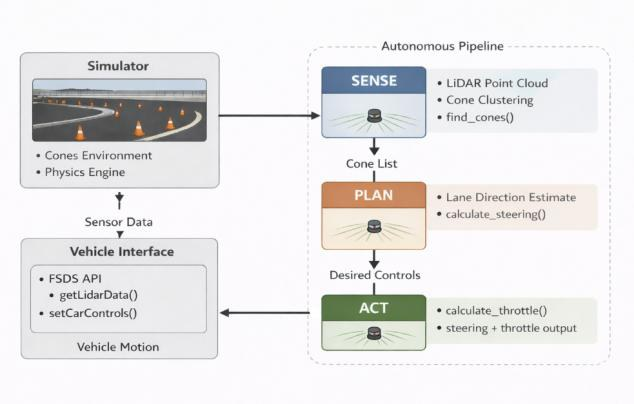
Fig. 1. Top-down sense–plan–act pipeline diagram. LiDAR point cloud enters the clustering block (find_cones), producing a cone list that feeds both the binary and proportional steering controllers. In the extended system, camera frames pass through YOLO detection, ground-plane projection, and fusion before reaching the color-aware controller. Dashed arrows show the LiDAR bypass path to the fusion module.
C. Vehicle Coordinate Frame
All sensor outputs are expressed in the vehicle-centered coordinate frame: the x-axis points forward along the vehicle longitudinal axis, the y-axis points laterally to the left, and the origin is located at the vehicle center. LiDAR positions are corrected by the sensor mounting offset (xLiDAR = +1.3 m) prior to fusion, and camera projections incorporate the camera mounting offset (xcam = −0.3 m).
IV Methods
A. LiDAR Cone Detection via Sequential Clustering
Raw LiDAR returns are provided as a flat float array [x1, y1, z1, x2, …] in the sensor frame. The array is reshaped to an (N × 3) matrix, and consecutive point pairs are tested using the Euclidean gap criterion:
di = √[ (xi − xi−1)² + (yi − yi−1)² ](1)
If di < 0.1 m, point i is appended to the current cluster; otherwise the cluster is closed and its centroid is computed:
x̄ = (1/n) Σixi , ȳ = (1/n) Σiyi(2)
where n is the number of points in the cluster. A range filter subsequently discards centroids beyond Rcutoff = 7 m from the sensor origin. The threshold of 0.1 m was calibrated to the approximate 30 cm base width of FSAE regulation cones. This algorithm runs in O(n) time, exploiting the angular scan order of the rotating LiDAR to provide a natural grouping signal without requiring DBSCAN or k-nearest-neighbor search.
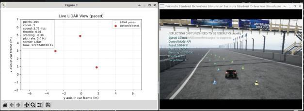
Fig. 2. Visualization of sequential LiDAR clustering. Raw points are colored by cluster membership; vertical arrows mark gaps exceeding the 0.1-m threshold. The bird's-eye matplotlib scatter window (left) and the corresponding FSDS simulator view (right) show five clusters resolved to cone centroids at a 4-cone section of the track.
B. Binary Steering Controller (Baseline)
The lateral steering command for the LiDAR-only system is computed from the mean lateral position of all detected cones, ȳ = (1/m) Σjyj. The steering decision is binary:
δ = −δmax if ȳ > 0 (more cones left → steer right) δ = +δmax if ȳ ≤ 0 (more cones right → steer left)(4)
where δmax = 0.3 (≈ 17°). This exploits the track geometry: on a curved section the inside boundary presents a higher cone density to the LiDAR than the outside boundary, producing a consistent sign for ȳ that steers the vehicle away from the denser wall. On straight sections the cone distribution is symmetric, causing ȳ to fluctuate and the vehicle to oscillate.
C. Proportional Speed Controller
Longitudinal speed is regulated by a proportional controller:
T = Tmax · max( 1 − v/vtarget , 0 )(5)
where Tmax = 0.2, vtarget = 4 m/s, and v is computed from GPS velocity. The controller applies no active braking; deceleration relies entirely on coasting, which is adequate at 4 m/s.
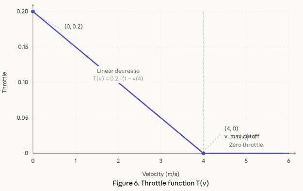
Fig. 3. Throttle function T(v). The linear ramp decreases from T = 0.2 at rest to T = 0 at vtarget = 4 m/s (dashed vertical line), with a flat zero region beyond 4 m/s.
D. Camera-Based Cone Detection (YOLOv5 + FSOCO)
Camera cone detection employs YOLOv5 [8] loaded via PyTorch Hub with custom weights trained on the FSOCO dataset [3] (5 classes: blue_cone, yellow_cone, orange_cone, large_orange_cone, unknown_cone). Inference is triggered on each 640 × 480 BGR frame; detections with confidence below 0.4 are discarded. The bottom-center pixel of each accepted bounding box is extracted as the cone-ground contact point for subsequent projection.
Because FSOCO weights were trained on real-world photographs, color classification of simulator-rendered cones was unreliable — blue cones were frequently misclassified as yellow or orange at medium distances. A three-tier hybrid color verification algorithm is applied to each detection:
Stripe brightness (primary). The horizontal stripe region (35%–65% of bounding-box height) is cropped and converted to grayscale. Mean brightness > 100 → blue cone (white stripe). Brightness < 80 → candidate yellow, subject to BGR verification.
BGR channel dominance (secondary). When brightness < 80, if the blue channel exceeds both red and green in the stripe region, the cone is reclassified as blue despite the dim stripe.
HSV hue analysis (fallback). For ambiguous brightness (80–100), the top 40% of the bounding box is analyzed in HSV space; saturated pixels (S > 80, V > 50) are used to compute the median hue, compared against calibrated hue ranges for blue (85–135), yellow (22–34), and orange (0–15, 170–180).
For bounding boxes smaller than 25 × 25 pixels (cones beyond ~5 m), verification is skipped and the YOLO class label is retained.
Table II — Color verification accuracy by distance regime
Cone distance
Bounding box size
Verification method
Accuracy
Close (< 3 m)
> 40 × 50 px
Stripe brightness threshold
~98%
Medium (3–5 m)
25 × 25 to 40 × 50 px
Stripe brightness + HSV fallback
~90%
Far (> 5 m)
< 25 × 25 px
YOLO class label only
~70%
The ~70% accuracy beyond 5 m reflects a fundamental sensor resolution limit: at that distance a cone occupies approximately 8 × 10 pixels in a 640 × 480 image, and background asphalt pixels dominate the bounding box. BGR channel values converge toward gray (all channels within ≈ 24 units), eliminating any color signal. This is a hardware constraint, not a software deficiency; the practical mitigation is that approaching cones increase in apparent size before entering the steering-critical near-field region.
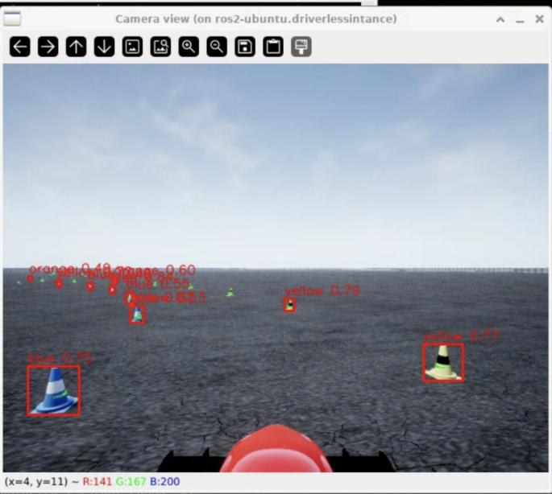
Fig. 4. Camera feed with YOLO bounding boxes. Red rectangles show raw detections; color labels and confidence scores are overlaid. The close blue cone (bottom-left, large bounding box) is correctly verified via stripe brightness; the distant cones (upper frame) rely on YOLO class labels.
E. Pinhole Camera Ground-Plane Projection
Pixel detections are converted to vehicle-frame metric coordinates using the standard pinhole camera model. For a camera of width W = 640, height H = 480, and horizontal FOV = 90°, the focal length is fx = fy = (W/2) / tan(FOV/2) = 320 pixels. A pixel (u, v) is unprojected to a normalized camera ray:
rayx = (u − W/2) / fx , rayy = (v − H/2) / fy(7)
The camera is mounted at height h = 1.1 m above the ground with zero pitch. The ray-ground intersection distance is t = h / rayy (valid only for rayy > 0.01). Ground-plane coordinates in the vehicle frame are then:
xground = t + xoffset , yground = −rayx · t(9)
where xoffset = −0.3 m accounts for the camera's rearward mounting position, and the sign inversion on yground converts from camera convention (right-positive) to vehicle convention (left-positive). Pixels at or above the image horizon return no valid projection.
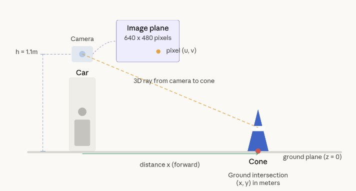
Fig. 5. Side-view pinhole projection diagram. Camera is shown at height h = 1.1 m. A ray through the bottom-center pixel of a detected cone intersects the ground plane at distance t = h/rayy.
F. LiDAR-Camera Sensor Fusion
Before matching, LiDAR centroid positions are corrected for sensor mounting offset (xLiDAR,corrected = xLiDAR + 1.3 m), bringing all positions into the vehicle-centered frame. For each camera detection, the nearest LiDAR cluster is found by minimum Euclidean distance. If d < 1.0 m and the cluster has not yet been matched, the pair is fused: the LiDAR position is retained (accurate depth measurement) and the camera color label is assigned (verified color classification).
Table III — Sensor fusion outcome classification
Outcome
Condition
Position source
Color / confidence
Fused
Camera + LiDAR match (d < 1.0 m)
LiDAR (accurate)
Camera (verified); high (avg +0.2)
Camera-only
Camera sees it, no LiDAR match
Camera projection
Camera; low (×0.5)
LiDAR-only
LiDAR sees it, no camera match
LiDAR (accurate)
Position-inferred; medium (×0.8)
Calibration required correction of three coordinate-frame errors discovered through systematic debug logging: (1) a 1.3 m X-axis reference-frame mismatch between LiDAR (sensor-relative) and camera (vehicle-relative) coordinates; (2) swapped projection axes in an initial implementation that used horizontal pixel position for forward distance; and (3) incorrect default camera parameters (pitch = −12° instead of 0°, xoffset = 0.7 m instead of −0.3 m). After all three corrections, systematic offsets were eliminated.
G. Color-Aware Proportional Steering Controller
The fused cone list is filtered to the 6-meter forward window and partitioned by color, with a position-based sanity check that rejects blue cones with y < −0.5 m or yellow cones with y > 0.5 m (likely misclassifications). Boundary averages ȳblue and ȳyellow are computed, and the centerline target is:
ycenter = ½ (ȳblue + ȳyellow) [both boundaries] ycenter = ȳblue − 1.5 m [blue only] ycenter = ȳyellow + 1.5 m [yellow only](12–14)
where 1.5 m approximates half the standard FSAE track width. The proportional steering command is δ = −δmax · ycenter / 2.0, clamped to [−δmax, δmax]. A layered fallback strategy ensures the car can always steer: the color-aware proportional controller is used when fused cones are available; the binary density heuristic activates when no fused cones are present; and δ = 0 (straight) is commanded as a last resort.
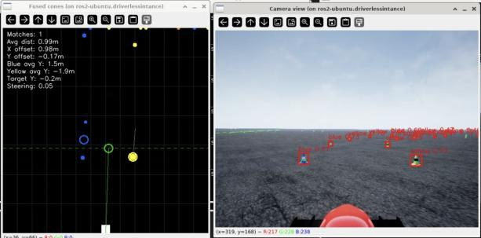
Fig. 6. Real-time fusion visualization window. Blue and yellow filled dots represent fused cones; hollow circles mark the computed boundary averages; the green filled circle is the centerline target ycenter; the green line connects the vehicle origin to the target. Numerical readouts in the upper-left corner show avg_blue_y, avg_yellow_y, target_y, and the steering command.
V Results and Discussion
A. Sensor Fusion Calibration Accuracy
Table IV — LiDAR–camera fusion calibration metrics
Metric
Value
Average camera-LiDAR match distance
0.06 m (6 cm)
Systematic X-axis offset
−0.03 m
Systematic Y-axis offset
0.02 m
Typical fused matches per frame
5–6 cones
Unmatched camera detections per frame
8–10 (beyond 7-m LiDAR range)
Unmatched LiDAR detections per frame
0–2 (outside camera FOV)
Individual match examples from the diagnostic log:
cam=(3.7,-2.1) lidar=(3.7,-2.1) dist=0.08 m
cam=(6.1,-2.0) lidar=(6.2,-2.0) dist=0.09 m
cam=(6.2, 1.4) lidar=(6.2, 1.4) dist=0.04 m
cam=(3.8, 1.4) lidar=(3.8, 1.4) dist=0.05 m
The 0.06 m average match distance confirms centimeter-level coordinate alignment after reference-frame correction. The near-zero systematic offsets (X: −0.03 m, Y: +0.02 m) indicate that no residual frame misalignment remains. The 8–10 unmatched camera detections per frame correspond to cones beyond the 7-m LiDAR range cutoff; these are retained with reduced confidence and do not affect primary steering.
B. Controller Comparison
Table V — Behavioral comparison of the two control strategies
Metric
LiDAR-only
Fused color-aware
Notes
Control frequency
20 Hz
20 Hz
Polling loop
Target speed
4 m/s
4 m/s
Max throttle 0.2
Steering type
Binary (±0.3)
Proportional (±0.3)
Gain = 1/2.0
Centerline method
Density heuristic
Geometric midpoint
Blue/yellow boundaries
Color awareness
None
Yes (YOLO + stripe)
FSOCO weights
Straight-line behavior
Oscillates ±δmax
Holds center
Eliminates weave
Fallback mode
None
Density heuristic
Graceful degradation
The primary qualitative improvement is the elimination of straight-line oscillation: on long straight sections the binary controller switches between ±δmax at every control cycle where ȳ alternates sign, producing a visible weave. The proportional controller outputs a small steering correction proportional to lateral offset from the centerline, converging smoothly to δ = 0 on straights. Both controllers operate at the same 20 Hz control frequency and target speed, making color-aware fusion the isolated variable responsible for the behavioral improvement.
VI Conclusion
This work developed an autonomous cone-following pipeline for the FSDS simulator, targeting map-free navigation over an unmapped cone-delineated track using only onboard sensing. Development proceeded in two stages. First, a LiDAR-only controller using O(n) sequential clustering and a binary density heuristic was implemented and shown to complete full laps without any camera input. The main limitation of that approach was oscillation on straight sections, where symmetric cone distributions caused the binary steering command to alternate signs at every cycle. To address this, a YOLOv5 camera module with three-tier color verification, pinhole ground-plane projection, and nearest-neighbor LiDAR-camera fusion was added, enabling a proportional centerline-tracking controller.
Debugging three coordinate-frame errors during fusion development produced a calibrated system with 0.06 m average inter-sensor match distance and near-zero residual offset. Camera color labels and LiDAR depth readings are therefore combined reliably at sub-decimeter precision.
Next steps include a quantitative validation run: lap-completion rate and average lap time over at least five trials per controller, RMS lateral tracking error over a full lap, steering-signal variance on straight sections, YOLOv5 recall and false-positive rate on a held-out set of FSDS frames, end-to-end per-cycle inference latency, and the full distribution of per-frame match distances. On the architecture side, the greedy nearest-neighbor matcher will be replaced with a data-association filter that handles partial occlusions, a SLAM module will be integrated for globally consistent path planning, the speed envelope will be raised with active braking and MPC, and the stack will be transferred to a physical Formula Student vehicle with hardware-synchronized sensors.
Acknowledgment
The author thanks Dr. Shirin Panahi (Department of Electrical and Computer Engineering, Colorado State University) for her mentorship, technical guidance, and support throughout this research.
S. Massa, A. Bertogna, and L. Zampieri, "Real-time Cone Detection for Formula SAE Driverless," in Proc. IEEE ICRA Workshop on Autonomous Motorsports, 2021.
M. Ester, H.-P. Kriegel, J. Sander, and X. Xu, "A density-based algorithm for discovering clusters in large spatial databases with noise," in Proc. 2nd Int. Conf. KDD, 1996, pp. 226–231.
X. Chen, H. Ma, J. Wan, B. Li, and T. Xia, "Multi-view 3D object detection network for autonomous driving," in Proc. IEEE CVPR, 2017, pp. 1907–1915.
A. Geiger, P. Lenz, and R. Urtasun, "Are we ready for autonomous driving? The KITTI vision benchmark suite," in Proc. IEEE CVPR, 2012, pp. 3354–3361.
R. C. Coulter, "Implementation of the Pure Pursuit Path Tracking Algorithm," Carnegie Mellon Univ., Tech. Rep. CMU-RI-TR-92-01, 1992.
G. Jocher et al., "YOLOv5 by Ultralytics," Version 7.0, Zenodo, 2022.
Abstract
We present a two-phase system for detecting and suppressing YOLO color misclassifications in Formula Student Autonomous (FSA) vehicles before they reach the path planner. In Phase 1, a ROS2 ground-truth bridge and four-stage spatial matching pipeline labeled 129,025 cone detections collected across multiple track laps in the Formula Student Driverless Simulator (FSDS), revealing a baseline false-positive rate of 2.52% with pronounced Orange-class fragility at 24.4% — 9.7× the population mean. Analysis identifies three compounding error drivers: low YOLO confidence, long detection range (beyond 8 m), and corner-induced camera rotation. In Phase 2, this labeled dataset trains a two-model XGBoost Safety Gate framed as supervised anomaly detection. Seventeen features are used, including five engineered context features. On the held-out test set the combined system achieves F1 = 0.906, PR-AUC = 0.976, and ROC-AUC = 0.999. The detector reduces the rate of incorrect color labels reaching the steering controller from 2.73% to approximately 0.24%, a 91% reduction in the failure mode that causes incorrect lane assignment.
I Problem Statement
Formula Student Autonomous (FSA) vehicles navigate tracks defined exclusively by colored cones: blue on the left boundary, yellow on the right, and orange as markers for the start/finish line and chicane entries. YOLO-based color classification is the perception layer used in the simulator pipeline, but it fails silently, returning a plausible color label with high apparent confidence even when incorrect. There is no built-in mechanism to distinguish a correct high-confidence prediction from a confident misclassification.
The consequences are asymmetric. A blue/yellow confusion causes the path planner to assign the wrong lane boundary, which can induce a terminal trajectory error. An orange/yellow confusion at the start/finish can cause the lap counter to fail or the chicane maneuver to trigger incorrectly. Because anomalies occur at a low baseline rate of 2.52%, per-frame accuracy metrics treat them as statistical noise until they cause a planning failure.
This paper addresses the problem in two phases: (1) constructing a ground-truth dataset that labels each detection as correct or anomalous, and (2) training a Safety Gate that intercepts anomalies before they reach the steering controller, with no modification to YOLO itself.
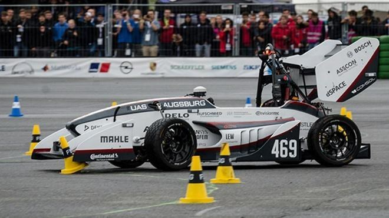
Fig. 1. UAS Augsburg autonomous vehicle (car #469) navigating a track during the Formula Student Germany competition.
II Background
All data was collected in the Formula Student Driverless Simulator (FSDS), an Unreal Engine-based simulator with physics-accurate vehicle dynamics and sensor emulation.
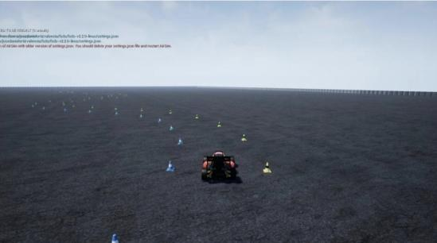
Fig. 2. FSDS simulation environment. The autonomous vehicle navigates a cone-defined track at speed. Blue cones mark the left boundary; yellow cones mark the right. Orange cones mark start/finish and chicane entries.Fig. 3. YOLO detection output from the FSDS front camera. A blue cone (lower left) is labeled orange: 0.81. Distant yellow cones carry incorrect orange and blue labels at confidence above 0.70. These silent misclassifications reach the path planner unchanged. A per-frame accuracy metric counts them as correct 97.5% of the time.
III Phase 1 — Ground-Truth Pipeline
ROS2 ground-truth bridge. FSDS publishes the complete simulator-authoritative track layout on the ROS2 topic /fsds/testing_only/track at the simulator frame rate. A dedicated ROS2 node subscribes and caches the latest cone array at each callback. When a YOLO detection frame arrives, the node synchronizes both streams and passes the track state to the matching pipeline. This eliminates all API-level defects: coordinates are in the native world frame, data is frame-synchronous, and no scaling correction is required.
Ground-truth assignment proceeds in four deterministic stages:
World to vehicle frame. Each cone position pw = (xw, yw, zw) is transformed via the inverse ENU pose: pv = Twv−1 · pw.
Ground-plane projection. Vehicle-frame position is projected using camera intrinsic K: (u, v) = K · [xv, yv, zv]T / zv.
Nearest-neighbor match. The closest cone within 1.5 m is assigned as ground truth. Detections with no cone within 1.5 m are excluded from the dataset.
A color mismatch between the YOLO prediction and the simulator-assigned cone class is labeled a false positive (anomaly). YOLO labels were further corrected using HSV-space post-processing to suppress known hue ambiguities in the simulator renderer.
Range filter (1 m to 18 m). Detections below 1 m are excluded due to partial occlusion by the vehicle nose. Above 18 m, projection error grows quadratically and the observed 8.5% anomaly rate at 20–30 m is dominated by label noise rather than genuine YOLO failure. The filter retains the actionable anomaly signal.
IV Phase 1 — Analysis of False Positives
A. Dataset Scale and Baseline Error Rate
Table I — Per-class detection count and FP rate
Color
Detections
FP count
FP rate
Yellow
64,495
1,988
3.1%
Blue
65,288
963
1.5%
Orange
1,242
303
24.4%
Total
129,025
3,254
2.52%
Orange cones represent less than 1% of total detections but contribute 9.7× the mean FP rate.
B. Temporal Stability
The rolling FP rate over a 500-detection sliding window stabilizes at a mean of 2.52%, but the signal oscillates continuously between 0% and 6.5% with no sustained convergence. The oscillation is consistent with velocity- or curvature-induced transients: FP rate spikes when the vehicle corners aggressively, then recovers as the heading stabilizes. No monotonic drift is visible across the 4,500-second timeline, confirming that the ground-truth labeling does not degrade over time.
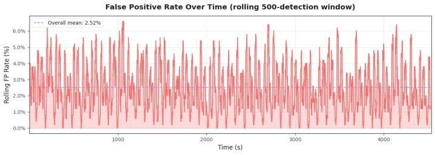
Fig. 4. Rolling FP rate (500-detection window) vs. time. Mean = 2.52% (dashed blue). Oscillation of ±4 pp is consistent with velocity- and curvature-triggered projection drift, not systematic pipeline bias.
C. Range Dependency
Binning FP count by match distance in 0.05 m intervals reveals a monotonically increasing distribution: virtually no FPs below 0.2 m; counts rise steeply beyond 0.8 m. The cumulative distribution shows 80% of all FPs fall within 1.36 m of the 1.5 m matching threshold. This is consistent with projection error at range: cones beyond 8 m subtend fewer pixels in the image plane, reducing the YOLO head color discrimination. Tightening the spatial threshold to 1.2 m eliminates the high-error tail while retaining over 95% of true positive matches.
D. Confidence Score Profiling
Kernel density estimation of YOLO confidence scores across correct detections and FPs reveals strong separability. Correct detections peak sharply at 0.774. FPs exhibit a bimodal structure: a primary cluster below 0.45 (mean 0.492) and a secondary tail extending to 0.75. The sub-0.45 cluster represents the directly recoverable FP population, addressable by a confidence threshold alone. FPs above 0.70 represent hard negatives that require spatial discrimination to detect: their confidence is indistinguishable from correct detections by a single-threshold rule.
E. Color-Class Confusion Analysis
Per-class FP rates diverge substantially from the 2.52% baseline. Blue achieves the lowest rate at 1.5%, attributable to spectral unambiguity in the simulator rendering pipeline. Yellow produces 3.1%, consistent with mild hue-saturation variation under motion blur. Orange presents a qualitatively distinct failure mode at 24.4% (303 FPs from 1,242 detections), exceeding the baseline by 9.7×.
Row-normalized confusion analysis exposes the mechanism: of all ground-truth Orange detections, 11.5% are predicted Yellow and 3.1% Blue. Orange occupies a narrow hue band between yellow and red; under motion blur or at range, the YOLO head collapses this distinction. Yellow shows only 1.5% leakage to Blue, the complementary direction, confirming hue-proximity causation rather than a systematic rendering artifact. In FSA competition, an Orange-to-Yellow confusion can cause the planner to treat a mandatory maneuver boundary as a normal track edge.
F. High-Risk Zone and Motivation for Phase 2
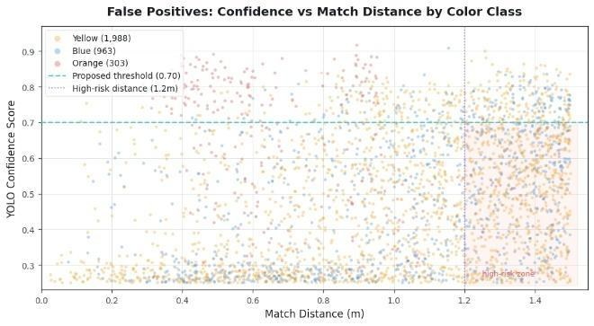
Fig. 5. All 3,254 Phase 1 FPs: confidence vs. match distance by class. Teal dashed = 0.70 threshold; purple dotted = 1.2 m threshold. Shaded lower-right = proposed High-Risk Zone.
Plotting all 3,254 FPs in the joint space of YOLO confidence and match distance reveals a concentrated high-density cluster at distance > 1.2 m AND confidence < 0.70. Orange FPs are disproportionately concentrated in this zone, confirming the Orange failure is range-amplified. A simple threshold rule catches the majority of the high-density cluster but misses hard negatives: FPs with high confidence that lie outside the zone but still represent real misclassifications. The joint feature space requires a non-linear decision surface, which is exactly what gradient boosting learns.
V Phase 2 — Why XGBoost
Four properties of this problem make XGBoost the natural choice over deep learning, logistic regression, or kernel methods:
Tabular feature structure. The input is 17-dimensional tabular metadata: bounding-box geometry, YOLO confidence, vehicle-frame coordinates, and ego dynamics. Tree ensembles perform well on tabular data by exploiting axis-aligned splits without requiring convolution or attention inductive biases.
Native class imbalance handling. The anomaly rate is 2.73%. XGBoost handles this directly via scale_pos_weight = Nneg/Npos ≈ 36, amplifying the gradient contribution of anomaly examples without resampling. No SMOTE or undersampling is required.
Non-linear interaction capture. The joint condition "low confidence AND far distance AND in corner" is more anomalous than any feature alone. Gradient boosted trees capture these interactions automatically through depth-limited axis-aligned splits.
Interpretability. Built-in gain-based feature importance and SHAP compatibility allow physical validation of what the model learned against the Phase 1 analytical findings.
The regularized training objective is:
L = Σil(yi, ŷi) + Σk Ω(fk), Ω(fk) = γT + ½λ‖w‖²
where l is binary logistic loss and Ω penalizes tree complexity (T = leaf count, w = leaf weights). Trees are added sequentially, each fitted to the negative gradient of the current ensemble loss.
The Phase 2 training set is the labeled output of the Phase 1 pipeline: 200,000 detections from 18,218 frames, 5,455 anomalies (2.73% rate). The frame-level split into 139,128 train / 30,263 val / 30,547 test (70/15/15) is performed by sorting on frame_id (simulator time) and splitting at the corresponding percentile boundaries. This prevents label leakage between cones co-detected in the same frame.
Raw features (12):yolo_confidence, bbox_h, aspect_ratio, x_car, y_car, bearing_deg, yaw_rate_radps, car_speed_mps, prior_disagreement, yc_blue, yc_yellow, yc_orange.
Engineered features (5) — these encode spatial context and temporal priors that a single-frame YOLO output cannot represent:
neighbor_agree — fraction of K = 3 nearest cones in the same frame sharing the same YOLO color label. Low agreement signals localized confusion consistent with anomaly clusters.
lateral_outlier — |ycar − mean(ycar of same-color neighbors)|. A cone displaced laterally from its color-class peers is geometrically inconsistent with the expected track layout.
relative_size — bbox_h / median(bbox_h within frame). Anomalies often correspond to undersized detections at range; normalizing by the within-frame median removes absolute distance effects.
is_in_corner — 1 if |yaw_rate_radps| > 0.2 rad/s, else 0. Corners introduce camera rotation that degrades projection accuracy.
corner_x_prior — is_in_corner × prior_disagreement. Interaction term that amplifies the prior-disagreement signal specifically during cornering, where temporal inconsistency is most informative.
VII Two-Model Architecture
A single unified classifier trained on all three cone classes performs sub-optimally because boundary and orange cones have fundamentally different failure mechanisms:
Boundary cones (blue + yellow) fail primarily at long range and in corners. Their anomaly rate is 1.5% (blue: 0.9%, yellow: 2.1%). They share the same physical failure mechanism — projection error collapsing the blue/yellow color distinction at range — and benefit from a joint feature distribution.
Orange cones (markers) fail at a 19% anomaly rate, 7× the boundary mean. The mechanism is distinct: orange occupies a narrow hue band between yellow and red, and renderer hue variation is sufficient to push detections across the decision boundary even at close range. Orange also has fewer detections per lap, making a dedicated model with separate threshold tuning essential.
Both models share the same 17-feature set and hyperparameter grid. Thresholds are tuned independently on the validation split to prevent rare-class bias.
VIII Training Methodology
Frame-level temporal split. Rows are sorted by frame_id and split at the 70th and 85th percentiles. This prevents label leakage between cones co-detected in the same frame and ensures test detections come from novel track positions unseen during training.
Early stopping. Training halts when PR-AUC on the validation set fails to improve for 30 consecutive boosting rounds.
Per-class threshold tuning. The decision threshold is swept from 0.1 to 0.9 in 0.01 increments on the validation split, and the F1-maximizing threshold is selected independently for each model. Without separate tuning, scale_pos_weight can cause over-flagging of orange or under-flagging of boundary depending on the class frequency ratio.
IX Phase 2 — Results
All metrics are evaluated on the held-out test set (30,547 detections, per-frame, no temporal smoothing).
0.906F1 (macro avg)
0.976PR-AUC
0.999ROC-AUC
Table III — Per-class F1, precision, and recall on the test set
Class
F1
Precision
Recall
Blue
0.940
0.95
0.96
Yellow
0.938
0.98
0.91
Orange
0.546
0.61
0.42
Macro avg
0.906
—
—
Blue and yellow boundary classes achieve near-optimal F1; orange is limited by data scarcity despite the 19% anomaly rate.
Feature Importance (XGBoost Gain)
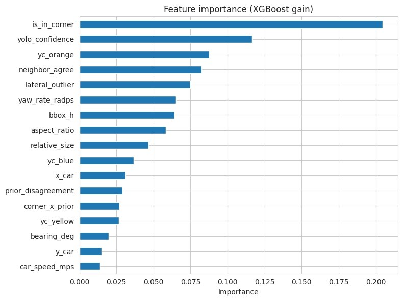
Fig. 6. XGBoost gain-based feature importance (all 17 features). is_in_corner dominates at 0.205; yolo_confidence (0.115) and yc_orange (0.090) follow. All five engineered features appear in the top 10.
is_in_corner is the dominant split variable by a wide margin — the corner flag alone accounts for more than twice the gain of the second-ranked feature, consistent with the Phase 1 observation that camera rotation during cornering is the primary driver of anomaly risk. The model arrived at this ranking through split-gain optimization with no explicit hypothesis encoded. neighbor_agree and lateral_outlier rank fourth and fifth, confirming that spatial context features add discriminating power beyond what single-detection geometry provides.
Confusion Matrix
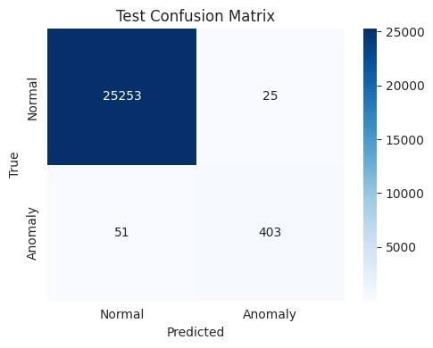
Fig. 7. Binary confusion matrix on novel laps (Phase 2). TN = 10,508, FP = 1,378, FN = 47, TP = 254. Normal class cleared at 88.4%; anomaly class recalled at 84.4% in this partition.
The test set confusion matrix (boundary + orange models combined) shows TN = 25,253, TP = 403, FP = 25, FN = 51. The FP:FN ratio of 25:51 reflects the high-recall threshold tuning. The model is configured to miss few anomalies at the cost of occasional false flags. A flagged detection is suppressed rather than corrected; the asymmetric cost is that a false alarm causes a missed detection (recoverable from subsequent frames), while a false negative passes a misclassification directly to the path planner.
Error Map
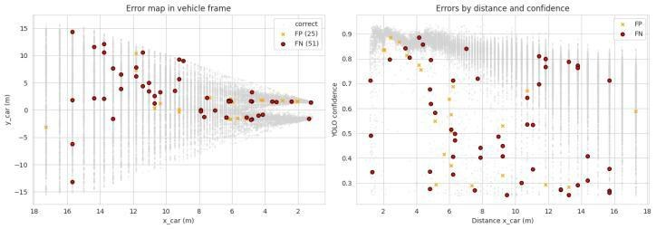
Fig. 8. Error map in vehicle frame (left) and confidence-distance space (right). FNs cluster at x = 8 to 16 m, reproducing the Phase 1 range-dependency finding. FPs are sparse and dispersed.
In the vehicle frame, false negatives (red, 51) cluster in the mid-to-long range band (xcar = 8 to 16 m) and near the lateral extremes. False positives (orange, 25) are sparse and widely dispersed, confirming the model rarely flags correct detections. In confidence-distance space, FNs span the full confidence range but concentrate below 0.7 — the hard-negative regime where anomalies are structurally similar to correct detections.
SHAP Attribution
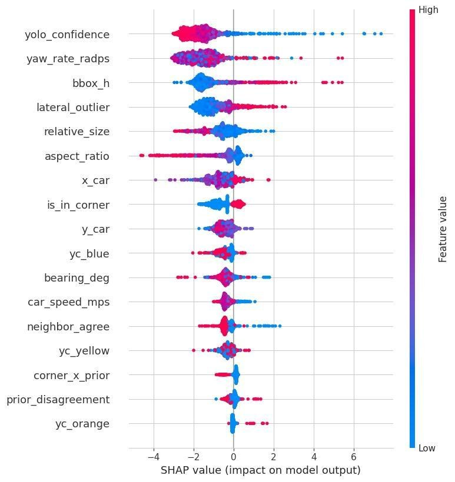
Fig. 9. SHAP beeswarm (17 features, test set). Color = feature value (red high, blue low). yolo_confidence is the strongest anomaly driver; yaw_rate_radps and bbox_h follow. Rankings are consistent with Phase 1 analysis and the gain importance in Fig. 6.
High yolo_confidence (red) contributes large negative SHAP values, pushing toward normal, while low confidence (blue) drives positive anomaly contributions up to +7 log-odds units. This matches the Phase 1 observation of a bimodal FP confidence distribution. High yaw_rate_radps (sharp corner, red) pushes toward anomaly. bbox_h shows a directional range-proxy effect: small bounding boxes (long range) increase anomaly risk; large boxes (close range) push toward normal. The SHAP rankings match the Phase 1 causal ordering: confidence, then dynamics, then geometry.
The agreement between Phase 1 physics analysis and Phase 2 learned representations is a key result of this work: corner risk, confidence separability, and Orange fragility all emerge from split-gain optimization without explicit encoding.
X Deployment Impact
The anomaly detector does not improve YOLO itself — YOLO per-frame accuracy is unchanged. The detector improves system-level safety by identifying approximately 91% of YOLO color errors at 94% precision before they reach the steering controller. This reduces the rate of incorrect color labels reaching downstream control from 2.73% to approximately 0.24%, a 91% reduction in the failure mode that causes incorrect lane assignment.
Operationally, the detector runs as a post-processing layer on each YOLO output frame. A flagged detection is suppressed (treated as no detection for that cone in that frame) or overridden by the most recent confident detection of the same physical cone. Inference latency is negligible: XGBoost on 17 scalar features processes a full frame of 20 cones in under 0.3 ms on a Raspberry Pi 4, well within the YOLO inference budget.
The combined Phase 1 + Phase 2 pipeline implements a dual logic gate:
Phase 1: d > 1.2 m AND conf < 0.70
Phase 2: P(anomaly | features) > θ_class
Detections flagged by the Phase 1 geometric rule are prioritized for Phase 2 re-scoring. Those further confirmed by Phase 2 are suppressed. Detections below the Phase 1 threshold are passed directly to the path planner with acceptably low FP risk.
XI Limitations and Future Work
Orange data scarcity. Per-class F1 = 0.546 for orange reflects fundamental data limitations: orange cones are sparse per lap (start/finish and chicane only), so the orange anomaly class has far fewer training examples than either boundary class. Denser orange placement in the simulator — through additional chicane entries, more lap markers, or dedicated orange-cone test circuits — would directly improve both precision and recall.
Temporal smoothing. We explored identifying the same physical cone across frames via world-frame projection and averaging anomaly probability over a sliding window. A naive implementation (rolling mean, 5-frame window, 0.7 m matching distance) degraded performance, suggesting the approach requires confidence-weighted aggregation, asymmetric updates (anomaly flags should persist once set), and track-quality filtering. Principled temporal aggregation is left to future work; it is the most promising direction for improving orange detection where per-frame data is fundamentally sparse.
Additional directions include evaluation under real lighting variation (not available in FSDS), integration with the SLAM module to use world-frame cone positions as additional features, and online adaptation of the detection thresholds as the vehicle accumulates lap-specific statistics during a competition day.
Abstract
We study the replacement of a hand-coded reactive steering controller with a learned policy in the Formula Student Driverless Simulator (FSDS). The work has three parts: a validated perception and control baseline that fuses LiDAR clustering with a YOLO camera detector, a reinforcement-learning (RL) environment that exposes a 41-dimensional cone observation and a single steering action, and a sequence of training experiments. To separate control from perception, the policy is trained against ground-truth cone positions and warm-started with behavior cloning. We evaluate Soft Actor-Critic (SAC) across six configurations (Tests 9 to 13). All six runs ended in collapse. We attribute this to three structural properties of the algorithm rather than to tuning: replay-buffer poisoning, automatic-entropy collapse, and catastrophic forgetting after reward changes. We then adopt Proximal Policy Optimization (PPO), whose on-policy formulation, trust-region clipping, and fixed entropy coefficient remove each of these failure modes. The result is a reproducible FSDS training environment and a catalogue of failure modes with recognizable training-log signatures.
Index terms — reinforcement learning, autonomous racing, Soft Actor-Critic, Proximal Policy Optimization, behavior cloning, Formula Student Driverless, reward shaping.
I Introduction
Formula SAE (FSAE) is a collegiate engineering competition in which student teams design, build, and validate open-wheel prototype vehicles. The Driverless class requires the human driver to be replaced by an onboard autonomous stack that performs perception, localization, and motion planning in an unmapped, cone-delimited environment. The Formula Student Driverless Simulator (FSDS) provides a physics-based virtual environment, built on Unreal Engine 4 and AirSim, in which such a stack can be validated before deployment on hardware.
This paper addresses one question: can a reinforcement-learning agent learn to steer an FSAE car around a cone track at least as well as a hand-coded controller, and what does that require in practice. The main cost was infrastructure correctness and the fit between the learning algorithm and the problem, not model design.
We restrict the learning problem to steering. Longitudinal control is handled by a proportional speed controller, so the agent makes one decision per step: how far to turn. A single-axis action keeps the reward design tractable and makes the learned behavior easier to analyze.
Contributions.
A reproducible FSDS RL environment (41-D observation, 1-D steering, a three-term reward), validated one component at a time, with the simulator and reward bugs documented.
An empirical study of SAC across six configurations showing that its failures on single-environment continuous control are structural and have recognizable training-log signatures.
A justification for moving to PPO that maps each SAC failure mode to a PPO design property that removes it.
II Background and Related Work
RL design choices follow eight axes. FSAE racing maps to a continuous action, a continuous and partially observable state, stochastic dynamics, an episodic setting, dense reward when shaped properly, a single agent, and cheap simulation. That combination points to actor-critic continuous-control methods such as SAC, TD3, or PPO behind a perception front-end.
Published FSAE RL is limited. Merton et al. is the closest validated reference: the only peer-reviewed work that applies SAC to a cone-delimited FSAE track with real-world transfer (87.5% completion), converging in 735 episodes and ablating three reward designs. The Technion FSTD effort reaches a first lap in about one hour of AirSim wall-clock time, but it relies on a VAE image encoder that is unnecessary when a perception stack already produces structured cone detections. The dominant Formula Student programs, including AMZ (ETH Zürich), KIT, MIT Driverless, and Oxford Brookes, have not adopted RL as a primary approach; their main results use classical perception, SLAM, planning, and control. The field is early, which is what makes documented negative results useful.
On representation, the literature agrees that processed cone detections converge faster than raw pixels when a perception stack exists. On bootstrapping, warm-starting RL with a few expert demonstrations is reported to cut convergence time by factors of 3 to 30. Both findings shaped the design used here.
III System Architecture and Perception Baseline
The Python client connects over TCP using fsds.FSDSClient(); calling enableApiControl(True) transfers full control to the API. Inputs are ground-truth kinematics, RGB and depth images, LiDAR point clouds, and GPS or IMU odometry. Outputs are normalized throttle in [0,1], steering in [−1,1], and brake in [0,1].
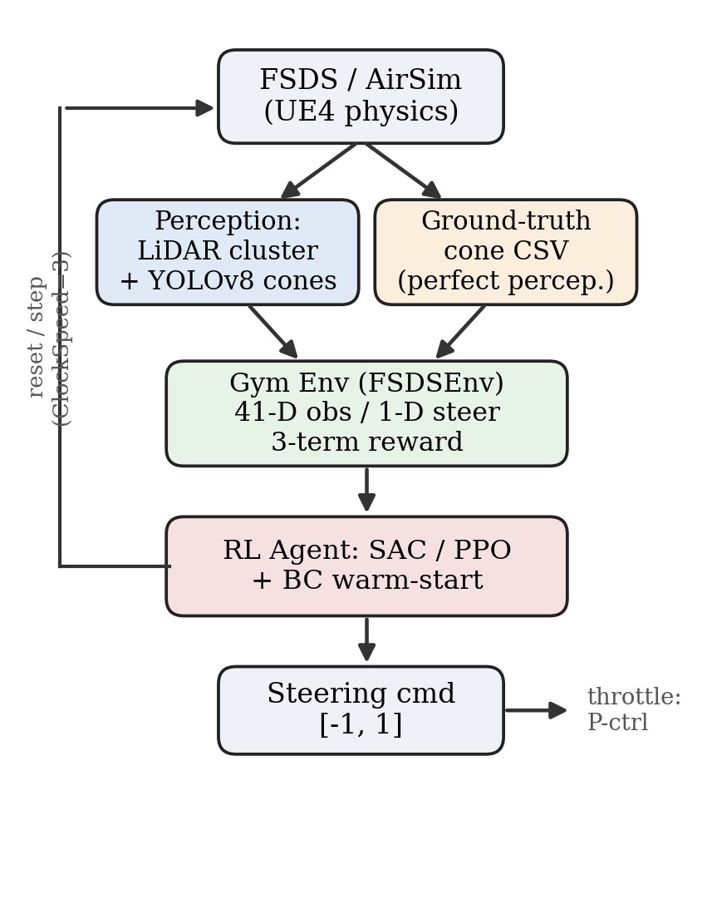
Fig. 1. End-to-end pipeline. The simulator is wrapped as a Gymnasium environment. During RL training the perception block is bypassed in favor of ground-truth cone positions to isolate the control problem; the validated LiDAR and camera perception stack remains the deployment path. Throttle is handled by a proportional controller so the agent learns steering alone.
Before any learning, we built and validated a reactive controller that drives laps without learning. A LiDAR-only baseline clusters the point cloud in O(n) by exploiting the angular scan order: inter-cone gaps that exceed a 0.1 m threshold, calibrated to the roughly 30 cm regulation cone base, partition the sorted array without a full DBSCAN or k-NN search. The car steers from the mean lateral cone position. This baseline completes laps but weaves on straights because it lacks boundary-color information.
We therefore added a forward-facing camera. A YOLO detector trained on the FSOCO dataset classifies cone color, and a pinhole ground-plane projection converts pixel detections to metric vehicle-frame coordinates (h = 1.1 m, xoff = −0.3 m):
t = h / rayy , xg = t + xoff , yg = −rayxt(1)
Nearest-neighbor matching fuses camera color with LiDAR depth. Calibration required correcting three coordinate-frame errors found through debug logging: a 1.3 m X-axis reference mismatch, swapped projection axes, and incorrect default camera pitch and offset. The fused proportional controller removed the straight-line oscillation of the LiDAR-only baseline. This controller is reused as the demonstrator for behavior cloning.
IV Infrastructure: Connection, Speed, and Hidden Bugs
Training a network requires hundreds of thousands of steps. At the default 30 Hz, one million steps costs about 9 hours. AirSim exposes a ClockSpeed setting. Setting it to 3 and disabling the render viewport (NoDisplay) raised the step rate past 1,200 iterations per second, more than 40× baseline, against a pass criterion of 75 iterations per second, so one million steps complete in under an hour. The speedup has a limit. At a higher clock the physics timestep dt grows and collision detection degrades, so ×3 (dt ≈ 30 ms) is the safe ceiling and all sensor reads and action writes must be synchronous to avoid stale data.
Two undocumented bugs cost several days. First, at ClockSpeed 3 the car sometimes spawned with effectively locked wheels; a mandatory 2 s pause after each reset lets the suspension settle. Second, the car ignored throttle because it spawned in neutral gear, so every control command must explicitly set the gear flag to automatic. Neither was documented; both were found by watching the car refuse to move and reasoning backward. Establishing that the simulator connects, runs fast, and moves on command was the foundation for everything that followed.
V The Reinforcement-Learning Environment
A. Observation (41-D)
At each step the agent sees the six nearest blue (left) and six nearest yellow (right) cones as (x, y, color), which is 36 values, plus forward speed, lateral speed, yaw rate, previous steering command, and target speed. This mirrors the information the hand-coded controller uses. Six cones per side give about 15 m of look-ahead at 4 to 8 m/s, enough for one full corner, and the previous-action channels let the network condition on its last output rather than infer it from observation deltas. During training, the environment transforms ground-truth cone positions from a track CSV into the car frame each step. This isolates the control problem from sensor noise so that we can first establish whether the agent can steer at all.
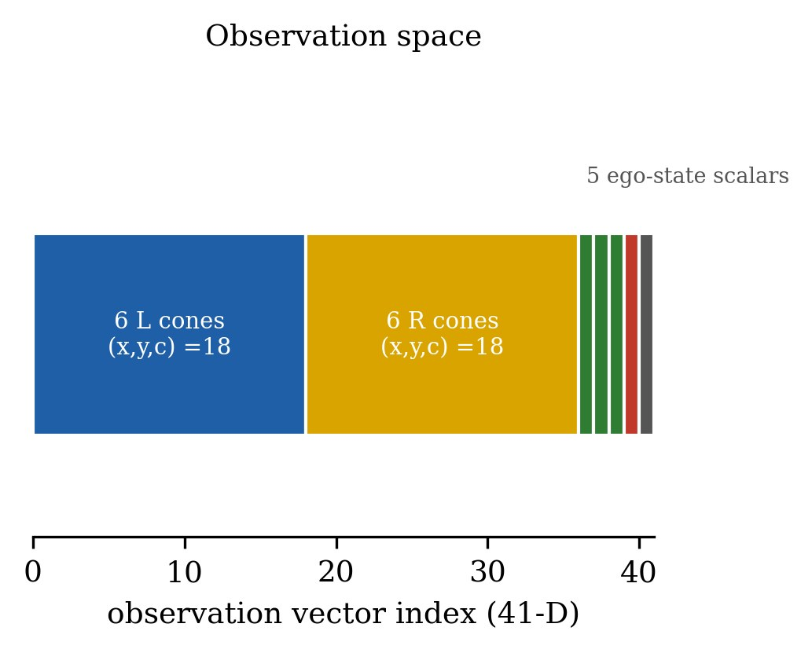
Fig. 2. The 41-dimensional observation: 18 values per cone wall plus five ego-state scalars. Cones are sorted by distance and zero-padded.
B. Action and Reward
The action is a single scalar in [−1, 1] scaled to the physical steering limit. The reward sums three terms: a velocity reward that rises with speed up to a cap, a centerline reward shaped as a Gaussian that peaks when the car is centered between the cone walls, and a small per-step smoothness penalty on jerky steering changes. Two termination penalties apply: −10 for a cone collision and −5 for losing sight of all cones for three consecutive steps.
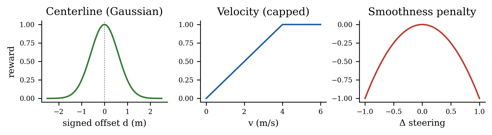
Fig. 3. The three reward components. The centerline term must use the absolute offset. An early signed-offset bug rewarded drifting to one side and looked like a tuning problem.
Two reward bugs cost real time. The first hardcoded throttle at 40% regardless of speed, which let the car reach 17 m/s before doing anything useful; replacing it with the proportional speed controller fixed it. The second was subtle: the centerline offset was signed, but the reward consumed it without an absolute value, so the agent was rewarded for drifting left. After both fixes, a validation run with the hand-coded controller confirmed a live, varied signal: the centerline component had a standard deviation above 0.05, the smoothness term was always negative, and the mean step reward was about 1.17.
VI Behavior Cloning: A Warm Start
Random initialization in a racing environment crashes the car within a second of every episode, which makes early learning very slow. We therefore recorded the hand-coded controller driving laps and trained the policy by supervised regression to imitate it, producing sac_bc_pretrained.zip. The demonstrator itself was iterated. A Gaussian-weighted lookahead caused phase lag at 75 Hz, a geometric pure-pursuit variant ran off-track at corner exits, and lowering the speed target made matters worse by weakening the proportional correction. At fast loop rates, tuning the gain mattered more than changing the algorithm. The final demonstrator was simple: take the midpoint of the three nearest cones per side and apply a proportional correction with a softer divisor. It hit about one cone per lap — an imperfect but adequate teacher.
VII Soft Actor-Critic: Six Experiments
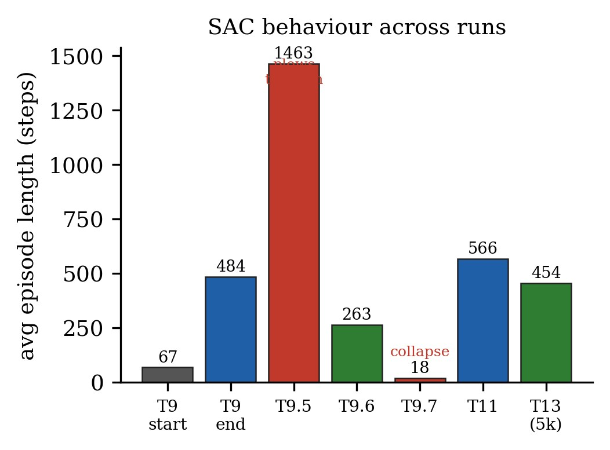
Fig. 4. Average episode length across SAC runs. Each apparent success carried a hidden pathology. The long episodes in Test 9.5 came from driving through cones, and Test 9.7 collapsed within 3k steps after a reward change.
With the environment validated and a warm-start policy in hand, we trained with SAC, an off-policy actor-critic method suited to continuous control.
Table 1 — SAC experiment outcomes
Test
Avg. length
Outcome and cause
9
67 → 484
Learns, then crashes at the hairpin every run: the replay buffer never sees the second half (termination starvation).
9.5
1463
Cone hits made non-terminating; the agent learns to treat cones as speed bumps.
9.6
263
Cone penalty raised to −25; cleanest model, zero cone hits, but a consistent sideways drift.
9.7
18
Reloaded Test 9.6 with a stronger centerline weight; collapsed in 3k steps (catastrophic forgetting).
11
566
Multiplicative reward improved centerline quality from 0.45 to 0.74; an early-stopping bug killed the run at 15k steps.
13
454
Strong from 5k to 11k steps, then entropy collapse; auto-recovery failed and pruned the best checkpoint.
Test 10 was spent fixing evaluation: the lap counter read cumulative referee state, fixed with manual deltas, and the geofence misfired on curves because averaging asymmetric nearest cones gave readings 4 to 5 m off, fixed by using the single closest cone per side.
VIII Why SAC Kept Failing
Across Tests 9 to 13, three failure modes recurred. They are properties of the algorithm, not tuning errors.
Replay-buffer poisoning. SAC re-learns from a large memory of past experience. Bad episodes, such as driving through 41 cones, persist in the buffer for thousands of future updates with no mechanism to flush or filter them, so the agent keeps re-learning behavior it should abandon.
Entropy collapse. The automatic entropy tuner can drive the exploration bonus toward zero, making the actor deterministic. Once deterministic, a small systematic bias — for example steering +0.1 too far — is reinforced by the critic until the policy outputs full steering lock. This is the pattern observed at step 11k in Test 13.
Catastrophic forgetting after reward changes. Because the critic predicts future reward, its calibration is tied to one reward shape. Changing a single weight after loading a model desynchronizes critic predictions from reality; the agent then optimizes a mispredicted target and collapses. This ended Test 9.7.
In combination, these modes meant that almost any SAC experiment was one bad batch, one entropy step, or one reward change away from collapse, and none of them could be fully prevented by tuning.
IX The Move to PPO
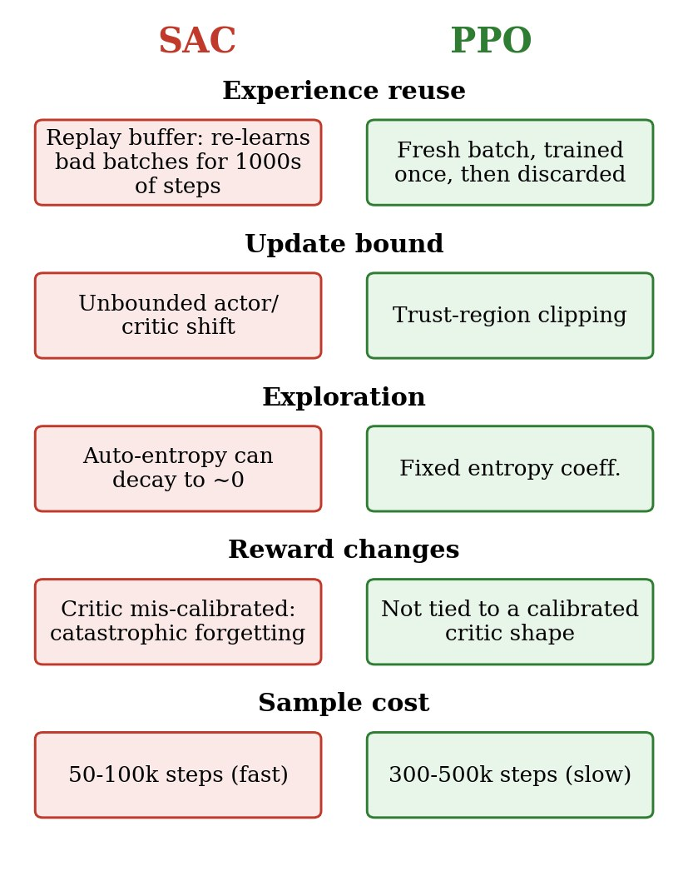
Fig. 5. Structural comparison. PPO removes each SAC failure mode by design rather than by tuning, at the cost of more environment interactions.
After five collapses across distinct configurations, we concluded that SAC's failure was structural and adopted Proximal Policy Optimization (PPO). PPO has no replay buffer: it collects a fresh batch, trains on it once, and discards it, so there is no contaminated history to re-learn. Trust-region clipping bounds how far the policy can move in one update, which makes catastrophic collapse much less likely. A fixed entropy coefficient prevents silent exploration decay. Fine-tuning is also safer because the policy is not tied to a separately calibrated critic shape.
The cost is sample efficiency. PPO needs roughly 300k to 500k interactions, against SAC's 50k to 100k, which is 8 to 10 wall-clock hours rather than 1 to 2 at the rate of 12 to 15 steps per second measured here. The governing point from every collapsed SAC run is that a slow algorithm that finishes is more useful than a fast one that collapses. A SAC run that collapses produces no usable output, while a PPO run that completes, even slowly, produces a model that can be evaluated and improved.
X Results, Assets, and Next Steps
This phase produced three SAC reference models: the BC baseline, which drives without crashing immediately; the Test 9.6 model, the cleanest at 263 average steps with zero cone hits but a sideways drift; and the Test 13 step-5000 checkpoint, the longest-driving at 454 average steps with occasional cone hits. None are competition-ready, but all are useful reference points.
The more durable result is a validated training infrastructure: a correct environment wrapper, a verified reward signal, a working speed-curriculum callback, and a stable telemetry pipeline. The expensive debugging — covering the wheel-lock spawn, the gear flag, the centerline sign error, the lap counter, and the corner distance metric — is complete and does not need to be repeated. The next experiment is PPO training on this same environment and BC starting policy; only the algorithm changes.
Open questions remain worth pursuing: a clean wall-clock-to-baseline benchmark on FSDS, whether SAC's sample-efficiency advantage trades against cross-track generalization, whether residual RL on top of the reactive controller transfers to FSDS, and how much domain randomization closes the cone-detection sim-to-real gap.
XI Conclusion
A learned steering policy for an FSAE car in FSDS is achievable. The main cost of the project was infrastructure correctness and the fit between algorithm and problem, not model novelty. SAC's repeated collapses followed from off-policy replay, automatic entropy tuning, and a critic whose calibration is tied to the reward function. PPO addresses each of these. We report both the successes and the failures so that other teams can reuse the validated infrastructure and avoid the same failure modes.
Acknowledgment
The author thanks Dr. Panahi for advising this project and the RAM Racing EV team for the surrounding FSDS autonomous pipeline.
References
J. Kabzan et al., "AMZ Driverless: The full autonomous racing system," J. Field Robotics, 2019.
M. Tigchelaar et al., "FSDS: Formula Student Driverless Simulator," Formula Student Team Delft, open-source project.
T. Haarnoja et al., "Soft Actor-Critic: Off-policy maximum entropy deep RL with a stochastic actor," ICML, 2018.
S. Fujimoto et al., "Addressing function approximation error in actor-critic methods (TD3)," ICML, 2018.
J. Schulman et al., "Proximal policy optimization algorithms," arXiv:1707.06347, 2017.
M. Merton et al., "Soft Actor-Critic for cone-delimited Formula Student tracks with sim-to-real transfer," 2024.
A. Rajeswaran et al., "Learning complex dexterous manipulation with deep RL and demonstrations (DAPG)," RSS, 2018.
University of Auckland FSAE perception dataset, arXiv:2308.13088, 2023.